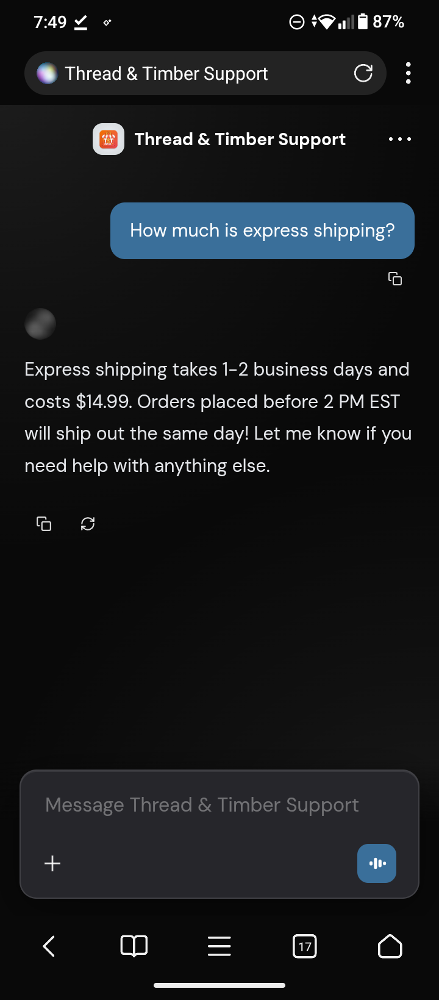
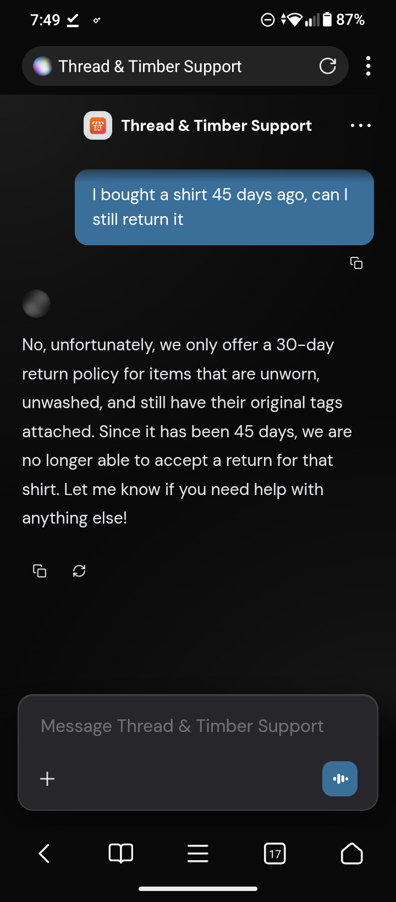
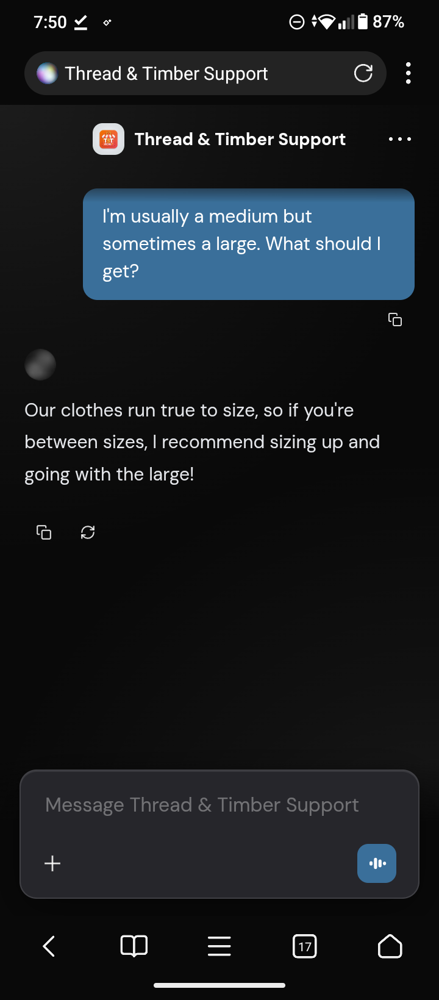

E-commerce stores lose sales and waste hours every day answering the same repetitive questions about shipping, returns, and sizing. Hiring more support staff is expensive, and customers hate waiting for email replies.
I built a custom, AI-powered support agent trained specifically on the store's policies. It acts as a 24/7 assistant, answering FAQs instantly without ever getting tired or making up policies.



The bot successfully deflects routine support tickets, enforces store policies automatically, and provides instant answers to buying-intent questions, saving the business owner hours of manual work every week.
Stop losing sales to slow support. Let's build a custom AI agent trained on your specific business.
Contact Verve Kiomi